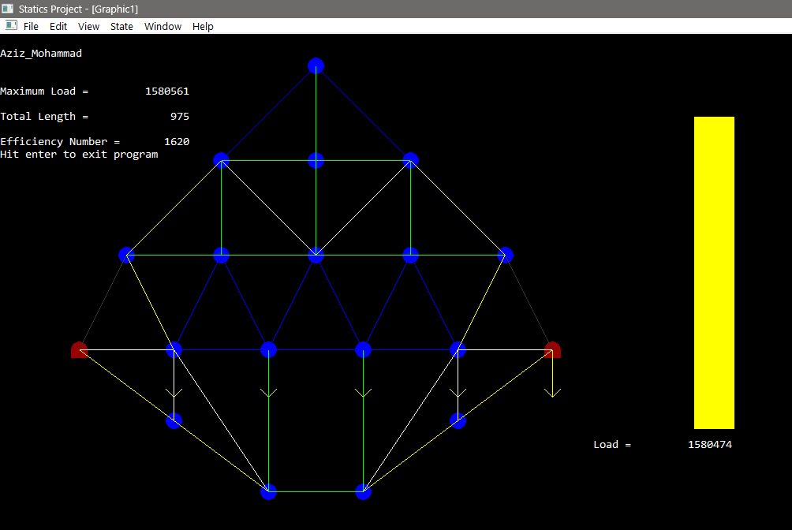
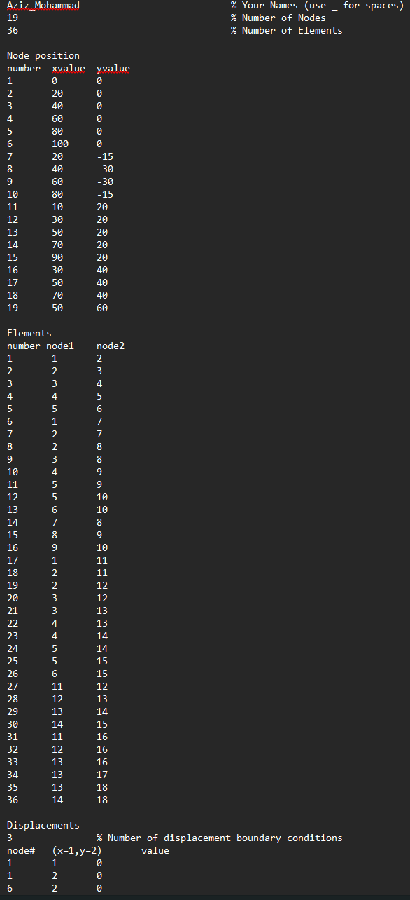
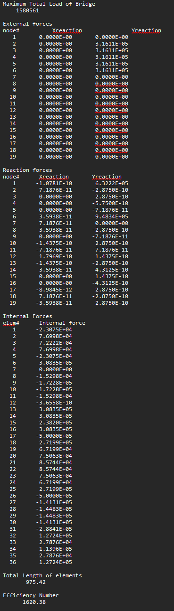

Truss Design & Analysis
Using code to make structural design decisions easier to compare.

Project Overview
I built a MATLAB solver to calculate forces in a truss and display how loads move through its members. I used that feedback to compare layouts for a classroom design competition, balancing load capacity against total member length.
Problem Statement
Design a truss that maximizes load capacity while minimizing total member length, under strict statics and failure constraints.
Design Process
- I organized the member-force calculations into one repeatable analysis loop.
- I defined the supports and loads so each layout could be evaluated consistently.
- I used the force visualization to revise node positions and member connections, focusing on the central load path.
From model inputs to force visualization


Tools Used
What I delivered
A solver and visualization workflow applied to a 21-node, 48-member truss. The figures below are calculated competition outputs, rather than measured load-test results.
- Calculated load under the competition model: 1,580,561 lb
- Competition efficiency score: 1620
- Geometry: 21 nodes, 48 elements
Lessons Learned
The useful output was a repeatable way to compare layouts and see which members governed the design. I learned to use the force pattern to guide geometry changes instead of adding material everywhere.